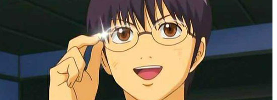
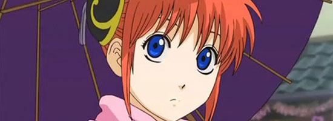

人物介绍
姓名：坂田银时
声优:杉田智和
幼：矢口麻美
人物简介:主人公，万事屋的老板，通称“万事屋阿银”。坚信并贯彻自己的“武士道”的男人，死鱼眼，喜欢甜食喜欢打小钢珠，平时MADAO。虽然看上去很随便，但其实很珍惜自己身边的人。绰号“白夜叉”
姓名：志村新八
声优:阪口大助
人物简介:长相平凡，是个摘掉眼镜存在感就为零的人物，喜欢吐槽。（在剧场版“永远的万事屋”里，有改变形象，被吐槽像冰山部长）。
姓名：神乐
声优:钉宫理惠
人物简介:女主角，夜兔族，性格善良单纯，但常会语出惊人（某些不纯语句），大胃，说话时带有中国口音（日本人看来），被称为China，有抖S特性。
姓名：定春
声优:高桥美佳子
人物简介:万事屋的吉祥物。神乐的宠物。巨大生物“狛神”。喜欢咬人。

